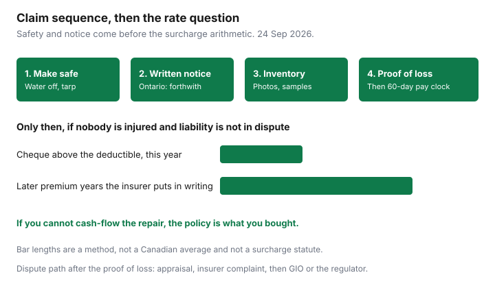

Insurance · Canada
How to File a Canadian Home Insurance Claim Without Wrecking Your Future Rates
A home claim is two problems at once. The first is getting a covered loss paid at the basis of settlement you bought. The second is the renewal, where a claims-free discount can end for as many years as that insurer’s filing says. Messy photos and a cleaned-up basement produce the first problem. Opening a claim for a repair you could have paid produces the second. This page is the order: make the house safe, give notice, keep the evidence, then run the deductible-versus-later-premium test only when nobody is hurt and you are not liable to someone else. Water and flood wording, and replacement cost versus actual cash value, are already written. They are linked, not repeated.
Disclosure: Education only. This page does not recommend a public adjuster, a repair loan, or any other product sold against a claim. Some provinces license public adjusters, who charge you a fee. You do not need one to use the appraisal and complaint path below. We do not claim a partnership with any insurer or contractor. Illustrations are not quotes. Rules read 24 Sep 2026.
Key takeaways
- Stop further damage first. Then give written notice. In Ontario, statutory conditions say notice forthwith and a proof of loss as soon as practicable. The loss is payable within 60 days after that proof is completed, unless the contract sets a shorter period.
- Photograph and list contents before cleanup. Keep damaged samples when it is safe. Throw-away day is after the adjuster has seen them, or after the insurer agrees in writing.
- A cash cheque is often actual cash value first. Replacement cost, if you bought it, is commonly the holdback you receive after you repair. Read which basis is on the declarations.
- If the amount above the deductible is small, you can pay the repair, and liability or injury is not involved, ask how many years the claim would price before you open it. If you cannot cash-flow the repair, claim.
- Amount disputes go to appraisal after a proof of loss. Conduct disputes go through the insurer’s complaint officer, then the General Insurance OmbudService where it applies, and the provincial regulator.
Triage: emergency mitigation first, then notice to insurer within policy timelines
The duty to prevent further damage and the duty to tell the insurer are both real. They are not an excuse to start a full renovation before anyone has seen the loss.
- Make it safe. Shut off the water if a pipe failed. If the roof is open, a tarp is mitigation. If sewage has entered the house, keep people out and follow public-health advice. Call emergency services when there is a fire, a gas smell, or a structural risk. Keep every receipt for tarps, emergency plumbing, and a dryer or fan you rented to limit mould.
- Give notice. Call the claims number on the policy, then follow up in writing the same day: date, what happened, what you have done to limit damage, and where you can be reached. In Ontario, the statutory conditions under the Insurance Act require the insured, for a covered loss, to forthwith give notice in writing to the insurer, and to deliver as soon as practicable a proof of loss verified by a statutory declaration. Other provinces attach their own statutory or policy conditions. Alberta and British Columbia wordings are not a photocopy of Ontario’s. Read the conditions in your booklet the day you need them, not from a forum.
- Ask for the forms. Insurers furnish proof-of-loss forms. Ask for them in the same written notice. Do not wait until someone mentions a deadline you have already missed.
- Know the pay clock once the proof is in. Ontario’s statutory conditions say the loss is payable within 60 days after completion of the proof of loss, unless the contract provides a shorter period. That clock is not a promise the insurer agrees the loss is covered. It is the timing rule after the proof is complete. A dispute about whether water was sudden or was a flood can sit outside a simple pay clock. The water endorsement guide and the overland flood guide are how those perils are split.
Material change and late notice are how claims get argued. A finished basement, a new suite, or a vacant house you never mentioned is a coverage problem of its own. Tell the insurer about the loss and about any change they do not already have on the policy.

Photo/video inventory before cleanup; keep damaged samples when safe
Adjusters price what they can see. A basement that has already been gutted to the studs, with the wet drywall in a dumpster, becomes a story. A basement with wide photos, a short video walking the water line, and a labelled sample of the carpet becomes a file.
- Photograph each room before anything is moved, then again after you have removed standing water if leaving it would cause more damage. Include a measuring tape or a door frame so the height of the water is visible.
- Photograph serial numbers and model labels on appliances before they leave the house. A receipt in a drawer is useful. A photo of the destroyed receipt, if that is all you have, is still better than a memory of what the fridge cost in 2019.
- Keep damaged materials that are safe to keep: a square of flooring, a piece of trim, the failed fitting if a plumber removed it. Ask the adjuster when those samples can be discarded. Sewage, mould that is spreading, and anything that is a health hazard should not be stored in a living space to win an argument.
- Make a contents list in a spreadsheet: room, item, age, what you paid if you know it, and whether you want it repaired or replaced. The proof of loss asks for quantities, costs, actual cash value, and the amount claimed. Building that list once is easier than rebuilding it on a statutory declaration at midnight.
- Save texts and emails with the contractor. “We found more damage in the wall” needs a photo of the wall before it is closed, not a sentence three weeks later.
Policies also give the insurer a right to enter and examine the property. They do not, under the usual statutory conditions, get to take possession, and you do not abandon the house to them by making a claim. Let them in. Do not hand over the only copy of your photos.
Choose repair vs cash settlement with eyes open on depreciation
Two different choices get called “cash.” One is the insurer paying you instead of steering a contractor. The other is the basis of settlement: replacement cost or actual cash value. The replacement-cost guide is the full distinction. The claim-day version is shorter.
- Repair. You or the insurer’s recommended contractor does the work. If you bought replacement cost, the settlement is aimed at the cost to repair or replace with materials of like kind and quality, subject to the limit and the deductible. You still choose a contractor with care. A network contractor is a convenience, not a duty, unless the insurer has elected in writing to repair or replace itself under the policy conditions.
- Cash on an actual-cash-value basis. Depreciation comes off. A ten-year-old roof, a laminate floor, and a sofa do not cheque at what they cost to buy new. If the policy pays replacement cost only after you actually replace, the first cheque may be the depreciated amount, and the difference arrives when you submit invoices. Spending the first cheque on something else can forfeit the holdback.
- Cash in full when you do not intend to repair. Ask, in writing, whether the offer is actual cash value only, and whether taking it ends the claim. A cash offer that feels fast can be the depreciated number. Compare it with one written contractor estimate before you sign a release.
Do not sign a release on the first call. Ask what perils the adjuster has accepted, what has been declined, the deductible, the limit, and whether a second deductible applies to sewer backup or overland flood. Those deductibles are often separate from the standard home deductible. The water guide shows where to read them on the declarations page.
When a claim is below deductible plus future surcharge—pay out of pocket instead
There is no national statute that says a home claim raises the premium for three years or six. Each insurer files its own rule, and a water claim, a fire, a theft, and a small appliance claim are not always treated alike. The question to ask, before a small claim is opened, is the same one on the auto claim-impact guide: how many years, what percentage or what lost discount, for this type of loss. Write down the name and the date. Home filings are not the auto chart. Do not paste a collision surcharge onto a burst pipe.
Use the test only when all of these are true: the damage is to your property, you are not injured, nobody else is claiming against you, and you can pay the repair from cash without borrowing at a high rate. A liability claim from a neighbour, a guest injury, or a loss you cannot cash-flow is why the policy exists. Skipping notice on a loss the contract requires you to report, in order to protect a discount, is a different and worse problem if the damage grows.
| Choice | Cash now | Later premium, in this sketch |
|---|---|---|
| Pay the repair | $1,400 to a plumber and a flooring installer. No claim. | The premium stays on its old path, including whatever claims-free discount the insurer requires a clean year to keep. |
| Claim it | $1,000 deductible. The insurer pays the other $400 of a covered repair. | If opening the claim removes a 10 percent claims-free discount for three years on an $1,800 premium, the extra premium is $180 times three, or $540. You paid a $1,000 deductible to shift $400, then spent $540. The claim was the expensive choice. |
| Claim a loss you cannot pay | $1,000 deductible on an $18,000 sewer backup that is covered by the endorsement. | Even a multi-year discount loss is smaller than $17,000 you do not have. Claim. Then ask the years, so the next renewal is not a surprise. |
If the insurer tells you that merely reporting a loss, without a payout, still counts as a claim, write that down too. Some companies want notice and then close the file without payment when you withdraw. Get the “no payout, no rate effect” sentence in an email before you rely on it.
Contractor and contents lists that speed adjuster approval
Adjusters move files that arrive complete. A complete home file is boring on purpose.
- One scope of work. Room by room: what is being removed, what is being replaced, whether materials match like kind and quality, and which items are betterments you want that the policy will not pay. A betterment is your upgrade. Price it separately so it does not stall the covered portion.
- Labour and disposal. Dumpster, drying equipment, and permits on their own lines. A single lump sum is harder to approve and harder to dispute.
- Contents in the same format as the proof of loss. Quantity, age, cost, actual cash value if you know how the policy depreciates, and the amount you are claiming. Group by room. A 40-page narrative is slower than a spreadsheet plus photos.
- Matches to the peril. Sudden discharge from a cracked supply line is a different file from groundwater seepage or overland flood. Name what you saw. Do not let a contractor’s invoice say “flood” for a burst washing-machine hose if that word is an excluded peril on your policy. Use the words the loss actually was, and let the adjuster map them.
- A second estimate only when the first is thin. You may get another price. Ask the insurer whether they need to see the damage before you authorize work above emergency mitigation. Authorizing a full gut before the visit is how scope fights start.
Pay the deductible yourself as the contract states. Do not ask the contractor to hide it inside a larger invoice. That is fraud, and statutory conditions treat a wilfully false statement on the proof of loss as invalidating the claim of the person who made it.
Dispute path: appraisal clause, ombuds, then provincial regulator
Work the path in order. Skipping to a public complaint before the insurer has a complete proof of loss wastes the step that actually prices the loss.
- Finish the proof of loss. Ontario’s appraisal condition is available when you disagree on the value of the property, the property saved, or the amount of the loss. There is no right to appraisal until you demand it in writing and the proof of loss has been delivered. Each side appoints an appraiser. Under the Insurance Act’s appraisal section, if a party fails to appoint an appraiser within seven clear days after being served with written notice to do so, a court can appoint one. The appraisers appoint an umpire if they need one. Appraisal decides amount. It does not, by itself, decide whether the peril was covered. Other provinces have their own appraisal sections. Use the one named in your conditions.
- Insurer’s complaint officer. If the fight is coverage, delay, or how you were treated, use the company’s complaint process. Ask for a final position letter. FSRA’s property-insurance complaint page, used 24 Sep 2026, says Ontario’s regulator wants that letter before it reviews a complaint, or proof that you tried to get one.
- General Insurance OmbudService. GIO handles eligible home, auto, and business disputes after the insurer’s internal process. Its published stages include assistance, informal conciliation, mediation, and a non-binding senior adjudication. A GIO outcome does not replace a lawsuit deadline. Read the limitation in your province and in the policy before you wait on a complaint. Do not assume a forum’s “one year from the fire” sentence is still your statute.
- Provincial regulator. FSRA in Ontario, the Autorité des marchés financiers in Quebec, and the superintendent or insurance council in other provinces take conduct complaints. They are not a second adjuster who rewrites your cheque. For life and health products the path is the OmbudService for Life and Health Insurance, which is the wrong door for a house.
Keep a single folder: notice email, photos, proof of loss, estimates, the final position letter, and any appraisal demand. That folder is the whole dispute. A public adjuster, where the province licenses one, is an optional hire you pay. This guide does not send you to one. The steps above are available without that hire.
Sources & date stamps
- Ontario Insurance Act statutory conditions, as restated in standard home policy conditions: written notice forthwith after a covered loss; proof of loss verified by statutory declaration as soon as practicable; loss payable within 60 days after completion of the proof of loss unless the contract sets a shorter period; appraisal only after written demand and delivery of the proof of loss. Confirm the current consolidated statute on ontario.ca. Used 24 Sep 2026.
- Insurance Act (Ontario) appraisal mechanism: a party who does not appoint an appraiser within seven clear days after written notice can have one appointed by the court. Amount of loss, not every coverage question.
- FSRA, how to resolve a property and other insurance complaint — insurer complaint officer and final position letter, then GIO for property and auto. Used 24 Sep 2026.
- General Insurance OmbudService, claims and complaint process pages — internal process first; later stages are non-binding. Used 24 Sep 2026.
- Home-claim surcharge years are insurer filings. None is stated here as a national figure. The auto surcharge guide is a method link, not a home rating table.
Frequently asked questions
How fast do I have to tell my home insurer?
In Ontario, statutory conditions require written notice forthwith after a covered loss, and a proof of loss verified by statutory declaration as soon as practicable. Other provinces use their own Insurance Act wording. Make the home safe first, then give notice the same day if you can, and follow up in writing. Do not wait for a contractor quote to mention the loss.
Should I claim if the repair is only a little over the deductible?
Ask the insurer, before you open the claim, how many years this type of loss affects the premium and whether a claims-free discount ends. If you can pay the repair from cash, nobody is injured, and liability to someone else is not in play, compare that cash with the later premium. If you cannot cash-flow the repair, the policy is what you bought.
Is a cash settlement the same as replacement cost?
Often the first cheque is actual cash value, with the depreciation holdback paid after you repair. Read the basis of settlement. The replacement-cost guide explains why rebuild cost and market value are different numbers.
Who do I call if the settlement is too low?
Deliver the proof of loss, then use the appraisal process in the provincial Insurance Act if the dispute is the amount of the loss. Complete the insurer’s complaint process and get a final position letter. General Insurance OmbudService can review eligible home complaints after that. The provincial regulator, such as FSRA in Ontario, handles conduct complaints and also wants that letter. This page does not recommend hiring a public adjuster.
Is this claims advice?
No. Education only. Your policy, the provincial Insurance Act, and the insurer’s complaint process control. We do not claim a partnership with any insurer, repair network, or adjuster.